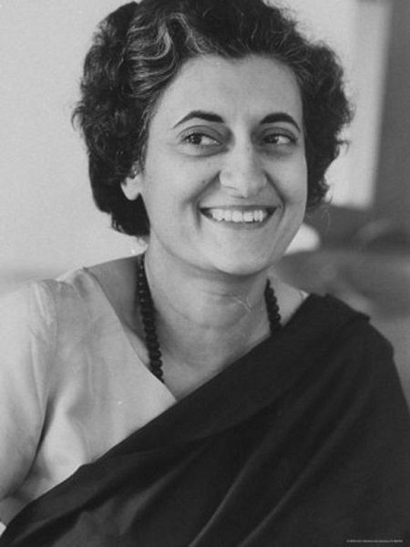

Introduction
Indira Gandhi was the first and only woman Prime Minister of India.
She was a strong and influential leader who played an important role
in shaping modern India.
Early Life
- Full Name: Indira Priyadarshini Gandhi
- Born: 19 November 1917
- Birthplace: Allahabad, India
- Father: Jawaharlal Nehru (First Prime Minister of India)
Education
- Studied at schools in India and abroad
- Attended University of Oxford
Political Career
- Became Prime Minister in 1966
- Served as PM from 1966–1977 and again from 1980–1984
- Known for strong leadership and bold decisions
Major Achievements
- Nationalization of banks
- Green Revolution (boosted agriculture)
- Leadership during Indo-Pak War of 1971 which led to the creation of Bangladesh
Challenges
- Declared Emergency (1975–1977), which was controversial
Death
- Died: 31 October 1984
- Assassinated by her bodyguards
Conclusion
Indira Gandhi remains one of the most powerful and influential leaders
in Indian history. Her leadership had a lasting impact on the country.
⬅ Back